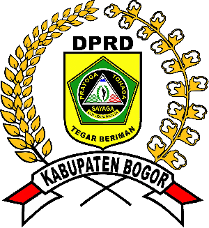

Jumat, 17 Januari 2025 | DPRD.BogorKab.go.id

DEWAN PERWAKILAN RAKYAT DAERAH
DEWAN PERWAKILAN RAKYAT DAERAH
KABUPATEN BOGOR
DPRD Kabupaten Bogor
Bapemperda DPRD Kabupaten Bogor Gelar Rapat Penyusunan Naskah Akademik Raperda
Jumat, 24 Januari 2025

HumasDPRD – Pansus Raperda 4 DPRD Kabupaten Bogor meninjau dua lokasi rencana calon Kantor Badan Penanggulangan Bencana Daerah (BPBD) Kabupaten Bogor, di Jalan Serang dan Jalan Banten, Bandung, Kamis, 23 Januari 2025. Peninjauan itu dihadiri oleh berbagai pihak terkait, dan membahas rencana pengembangan kantor BPBD untuk meningkatkan kesiapsiagaan terhadap bencana di wilayah tersebut. Peninjauan ini menunjukkan komitmen pemerintah Kabupaten Bogor dalam memperkuat infrastruktur penanggulangan bencana.
Baca Selengkapnya
Bapemperda DPRD Kabupaten Bogor Gelar Rapat Penyusunan Naskah Akademik Raperda
Jumat, 24 Januari 2025

HumasDPRD – Cibinong – Badan Pembentukan Peraturan Daerah (BAPEMPERDA) DPRD Kabupaten Bogor telah menggelar rapat kerja bersama Alat Kelengkapan DPRD (AKD) Pengusul. Peninjauan itu dihadiri oleh berbagai pihak terkait, dan membahas rencana pengembangan kantor BPBD untuk meningkatkan kesiapsiagaan terhadap bencana di wilayah tersebut. Peninjauan ini menunjukkan komitmen pemerintah Kabupaten Bogor dalam memperkuat infrastruktur penanggulangan bencana.
Baca Selengkapnya
Rapat Paripurna DPRD Kabupaten Bogor, 13 Januari 2025
Selasa, 14 Januari 2025

Cibinong- DPRD Kabupaten Bogor pada hari Senin, 13 januari 2025 melaksanakan Rapat Paripurna DPRD dalam rangka:1. Pembacaan Struktur Fraksi Partai Peninjauan itu dihadiri oleh berbagai pihak terkait, dan membahas rencana pengembangan kantor BPBD untuk meningkatkan kesiapsiagaan terhadap bencana di wilayah tersebut. Peninjauan ini menunjukkan komitmen pemerintah Kabupaten Bogor dalam memperkuat infrastruktur penanggulangan bencana.
Baca Selengkapnya
Pembangunan Infrastruktur Jalan Kabupaten Bogor, 5 Maret 2025
Kamis, 6 Maret 2025

Cibinong- Pemerintah Kabupaten Bogor memulai pembangunan jalan di beberapa daerah yang sebelumnya sulit dijangkau. Proyek ini bertujuan untuk memperlancar akses transportasi antar kecamatan dan meningkatkan perekonomian lokal. Diharapkan proyek ini selesai tepat waktu dan memberikan manfaat jangka panjang bagi masyarakat.
Baca Selengkapnya
Festival Seni Budaya Kabupaten Bogor, 20 Februari 2025
Rabu, 21 Februari 2025
Cibinong- Festival Seni Budaya Kabupaten Bogor kembali diadakan pada 20 Februari 2025. Acara ini menampilkan berbagai pertunjukan seni tradisional, mulai dari tari-tarian daerah hingga pameran kerajinan tangan, yang menonjolkan kekayaan budaya Kabupaten Bogor. Event ini dihadiri oleh masyarakat luas dan menjadi ajang promosi budaya lokal.
Baca Selengkapnya
Agenda
- Agenda Kegiatan Kamis 16 Januari 2025
- Agenda Kegiatan Jumat 17 Januari 2025
- Agenda Kegiatan Senin 20 Januari 2025
- Agenda Kegiatan Selasa 22 Januari 2025
- Agenda Kegiatan Rabu 23 Januari 2025
- Agenda Kegiatan Kamis 24 Januari 2025
- Agenda Kegiatan Jumat 25 Januari 2025
- Agenda Kegiatan Senin 27 Januari 2025
- Agenda Kegiatan Selasa 28 Januari 2025
- Agenda Kegiatan Rabu 29 Januari 2025
Warta
- Penyampaian Laporan Tahunan
- Pelantikan Anggota Baru
- Evaluasi Proyek Infrastruktur
- Diskusi Ekonomi Lokal
- Kerjasama dengan Pemerintah Pusat
- Program Pendidikan Baru
- Rencana Pembangunan Kawasan
- Pembukaan Lomba Kesenian
- Peningkatan Infrastruktur Jalan
- Forum Diskusi Masyarakat
- Evaluasi Proyek Kesehatan
- Kerjasama Antar Daerah
- Laporan Keuangan Pemerintah
- Pertemuan dengan Organisasi Masyarakat
Terkini
Bapemperda DPRD Kabupaten Bogor Gelar Rapat Penyusunan Naskah Akademik Raperda
05 December 2024
Bapemperda DPRD Kabupaten Bogor Gelar Rapat Penyusunan Naskah Akademik Raperda
05 December 2024
Bapemperda DPRD Kabupaten Bogor Gelar Rapat Penyusunan Naskah Akademik Raperda
05 December 2024
Bapemperda DPRD Kabupaten Bogor Gelar Rapat Penyusunan Naskah Akademik Raperda
05 December 2024
Terpopuler
Bapemperda DPRD Kabupaten Bogor Gelar Rapat Penyusunan Naskah Akademik Raperda
05 December 2024
Bapemperda DPRD Kabupaten Bogor Gelar Rapat Penyusunan Naskah Akademik Raperda
05 December 2024
Bapemperda DPRD Kabupaten Bogor Gelar Rapat Penyusunan Naskah Akademik Raperda
05 December 2024
Foto
Pelepasan Atlet Kabupaten Bogor ke POPDA XIII dan FORNAS VII
Jumat, 24 Januari 2025
Cibinong- Pemerintah Kabupaten Bogor memulai pembangunan jalan di beberapa daerah yang sebelumnya sulit dijangkau.
Selasa, 14 Januari 2025
Rapat Paripurna DPRD Kabupaten Bogor, 13 Januari 2025
Kamis, 6 Maret 2025
Ketua DPRD Kabupaten Bogor Hadiri Silaturahmi HIMPAUDI Kecamatan Rancasari
Rabu, 21 Februari 2025
Video
 Cibinong – DPRD Kabupaten Bogor menyampaikan tanggapan sekaligus rekomendasi terhadap Laporan Pertanggung Jawaban (LKPJ)
Kamis, 29 April 2020
Cibinong – DPRD Kabupaten Bogor menyampaikan tanggapan sekaligus rekomendasi terhadap Laporan Pertanggung Jawaban (LKPJ)
Kamis, 29 April 2020
 Rekomendasi DPRD Terhadap LKPJ Bupati Bogor Tahun Anggaran 2020
Jumat, 5 Maret 2020
Rekomendasi DPRD Terhadap LKPJ Bupati Bogor Tahun Anggaran 2020
Jumat, 5 Maret 2020
 Ketua DPRD Kabupaten Bogor : Ajak Semua Elemen Meningkatkan Semangat Solidaritas, Gotong Royong dan Mengedepankan Kearifan Budaya Lokal di Hari Jadi Bogor ke 539
Kamis, 25 Februari 2021
Ketua DPRD Kabupaten Bogor : Ajak Semua Elemen Meningkatkan Semangat Solidaritas, Gotong Royong dan Mengedepankan Kearifan Budaya Lokal di Hari Jadi Bogor ke 539
Kamis, 25 Februari 2021
Alat Kelengkapan Dewan
Fraksi-Fraksi